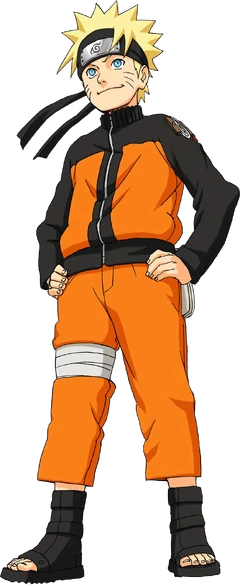

Dekune

Наруто Шиппүүдэн нь Наруто хэмээх цувралын үргэлжлэл юм. Үзүмаки Наруто 3 жилийн дараа шалиг даяанчтай хийх бэлтгэлээ дуусгачхаад тосгондоо эргэж ирснээр Орочимарүгаас найз Сасүкегээ эргүүлэн авахаар үйл явдал эхэлнэ. Харин одоо Нарутоогоос ганц шиноби нарын ч биш бүхий л ертөнцийн хувь тавилан хамаарч байна! Аймшигт 10 сүүлтээс ертөнцийг аварч чадах болов уу?